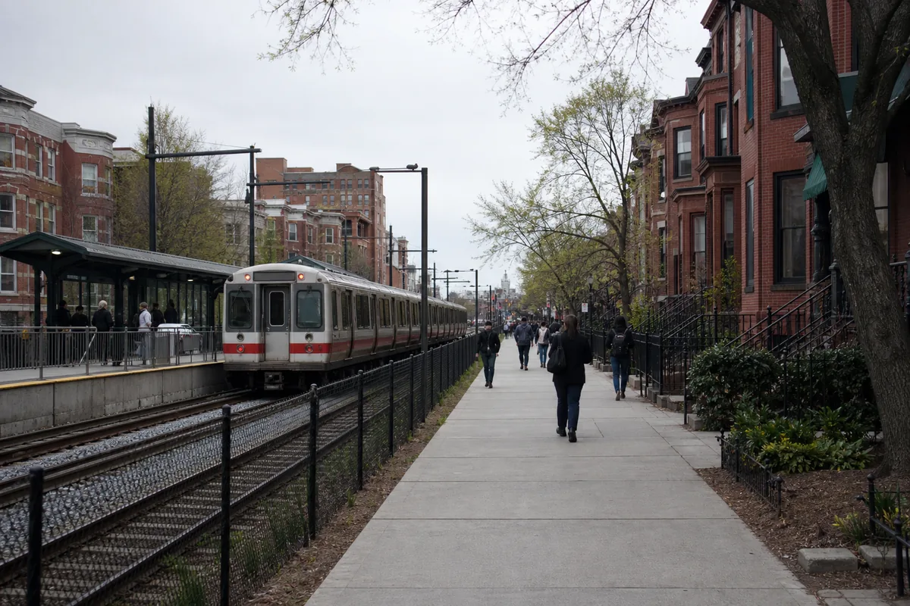
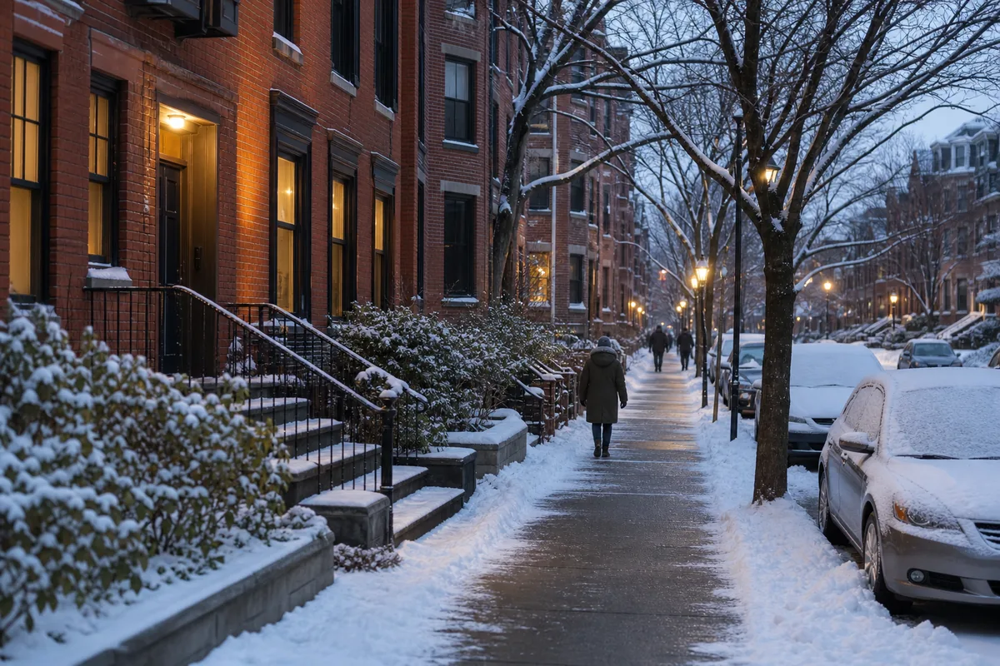

A pergunta não é apenas se Boston é uma cidade boa. Ela é se a cidade funciona para a sua renda, trabalho, família e rotina. Boston oferece acesso a hospitais, universidades, pesquisa, finanças, tecnologia e transporte público, mas cobra caro pela localização.
Também é importante separar Boston, a cidade, de Greater Boston, a região metropolitana. Cambridge, Somerville, Quincy, Newton e outras cidades próximas têm administrações, escolas, impostos e mercados de aluguel próprios. Morar perto de Boston não significa necessariamente morar dentro de Boston.
Vale a pena morar em Boston?
Boston tende a fazer mais sentido quando a localização reduz deslocamentos e aproxima a pessoa de uma oportunidade concreta. Um estudante perto da universidade, um profissional de saúde perto do hospital ou alguém que trabalha em uma área atendida pela MBTA pode ganhar tempo e depender menos de carro.
| Perfil | Quando Boston pode funcionar | Principal alerta |
|---|---|---|
| Estudante | Instituição definida, moradia compartilhada e orçamento completo. | Aluguel, taxas acadêmicas e renda limitada. |
| Profissional qualificado | Oferta de trabalho compatível com o custo e trajeto previsível. | Comparar salário bruto com despesas e impostos. |
| Família com filhos | Moradia, escola, saúde e transporte pesquisados antes da mudança. | Creche, espaço e escolha escolar podem elevar o custo. |
| Recém-chegado sem trabalho definido | Somente com reserva robusta e plano realista de renda. | Boston raramente é uma cidade barata para improvisar. |
Quanto custa morar em Boston?
Não existe um total mensal confiável que sirva para todo mundo. A forma mais responsável de calcular é começar pelo aluguel real do endereço desejado e somar alimentação, saúde, transporte ou carro, internet, telefone, aquecimento, creche, dívidas e reserva.
| Referência | Dado disponível | Como interpretar |
|---|---|---|
| U.S. Census Bureau | Aluguel bruto mediano de US$ 2.147 no período 2020–2024 | É uma medida histórica de contratos existentes, incluindo custos selecionados. Não representa o anúncio que o recém-chegado verá hoje. |
| Zillow Rentals | Aluguel médio anunciado de US$ 3.450 em 2 de agosto de 2026 | Reúne todos os tipos e tamanhos de imóvel anunciados na cidade. Serve como fotografia do mercado, não como orçamento garantido. |
| Zillow Rentals | Studio médio anunciado de US$ 2.300 na mesma atualização | Ajuda a dimensionar a entrada, mas bairro, condição e utilidades mudam o preço. |
| Planejamento editorial | Aluguel atual + contas + saúde + mobilidade + alimentação + filhos + reserva | É a conta que deve ser montada para o seu perfil, sem converter um único valor em promessa. |
Para montar o restante do orçamento, use o guia pilar de custo de vida nos EUA. Valores de mercado mudam rapidamente; confirme anúncios, plano de saúde, trajeto e escola na semana em que tomar a decisão.
Aluguel em Boston: o que verificar antes de assinar
O aluguel costuma ser a maior despesa e pode exigir uma reserva de entrada significativa. Segundo o Mass.gov, o proprietário pode solicitar o primeiro mês, o último mês, depósito de segurança de até um mês e o custo real de uma nova chave e fechadura. As regras sobre depósito, recibos e conta remunerada são específicas de Massachusetts.
Não envie dinheiro apenas por conversa em rede social. Confirme o imóvel, quem tem autoridade para alugá-lo, o contrato, o que está incluído e como serão documentados os pagamentos. Em caso delicado, procure orientação jurídica local; este artigo não analisa contratos individuais.
- Confirme se aquecimento, água e lixo estão incluídos.
- Verifique lavanderia, estacionamento, animais e retirada de neve.
- Simule o trajeto no horário real de trabalho ou estudo.
- Observe mercado, farmácia, escola e atendimento médico próximos.
- Peça recibos e guarde anúncio, contrato, fotos e comprovantes.
Planejando sua mudança para os EUA?
Antes de escolher Boston, organize documentos, dinheiro, moradia, escola, carro, transporte e os primeiros passos. Baixe gratuitamente o Checklist Completo da Mudança para os EUA.
Baixar checklist gratuitoTrabalho e salários na região de Boston
A economia metropolitana é forte em educação e saúde, tecnologia, pesquisa, serviços profissionais, finanças, hotelaria, alimentação, construção e manutenção. Isso não significa que qualquer vaga pagará o suficiente para morar na cidade.
O Bureau of Labor Statistics informou salário médio de US$ 43,09 por hora na região Boston–Cambridge–Newton em maio de 2025, mas a média esconde diferenças grandes. No mesmo levantamento, alimentação e atendimento tinham média de US$ 20,59; apoio em saúde, US$ 22,69; gestão, US$ 88,02. São médias ocupacionais metropolitanas, não ofertas garantidas nem renda líquida.
Antes de mudar, pesquise a ocupação exata, exigência de licença, inglês, horário e endereço. O guia sobre como conseguir trabalho nos EUA sendo brasileiro ajuda a separar preparo profissional de autorização migratória. Trabalho legal exige autorização adequada.
Estudo, universidades e carreira
Boston e Cambridge concentram universidades, hospitais e centros de pesquisa. Essa proximidade pode criar acesso a cursos, networking e empregos, mas a admissão em uma instituição ou a oferta de trabalho não resolve automaticamente moradia, transporte ou imigração.
Quem pretende estudar deve comparar custo total do curso, seguro saúde, moradia, regras do visto e possibilidade real de deslocamento. Para Harvard, MIT, Kendall Square, biotech e parte do ecossistema acadêmico, o guia de como é morar em Cambridge oferece uma análise mais específica.
Dá para morar em Boston sem carro?
Em muitos bairros, sim. A MBTA opera metrô, ônibus, commuter rail e ferry. Na consulta feita para esta revisão, a tarifa local de ônibus era US$ 1,70, a de metrô US$ 2,40 e o passe mensal LinkPass US$ 90. Tarifas e regras podem mudar; confirme sempre no site oficial antes de calcular o mês.
Viver sem carro depende menos do nome da cidade e mais do endereço. Abra o mapa e simule casa–trabalho, casa–escola, mercado, médico e compromissos noturnos. Quem mora fora da rede principal ou trabalha em horários muito cedo pode precisar combinar carro e transporte.

Se o carro for necessário, inclua seguro, estacionamento, combustível, manutenção, registro e neve. Veja também quanto custa ter carro nos EUA.
Bairros e cidades próximas: não confunda os limites
Back Bay, South End, Allston, Brighton, East Boston e Dorchester ficam dentro de Boston. Cambridge, Somerville, Quincy, Newton, Framingham e Worcester são municípios distintos. A escola pública, o contrato de aluguel, o transporte e os serviços locais mudam conforme o endereço.
| Área para pesquisar | Perfil de rotina | O que conferir |
|---|---|---|
| Back Bay e South End | Vida urbana central e acesso a serviços. | Aluguel, espaço e estacionamento. |
| Allston e Brighton | Estudantes, roommates e conexão com áreas acadêmicas. | Ruído, condição do imóvel e trajeto. |
| East Boston | Acesso ao aeroporto e à Blue Line em partes do bairro. | Rota exata, enchente costeira e preço do anúncio. |
| Dorchester | Bairro grande e diverso, com realidades diferentes. | Rua, estação, escola e rotina em horários distintos. |
| Cambridge, Somerville e Quincy | Alternativas próximas com administrações próprias. | Comparar aluguel e tempo porta a porta, não apenas distância no mapa. |
Nenhum bairro deve ser rotulado como totalmente seguro ou perigoso. Consulte dados locais, visite em horários diferentes e avalie a rua, a iluminação, o transporte e a rotina que sua família realmente terá.
Escolas e vida com filhos
Em Boston, o endereço não garante automaticamente uma escola específica. O Boston Public Schools usa o endereço para gerar uma lista personalizada de opções elegíveis dentro do plano Home-Based. A família classifica preferências, mas a primeira escolha não é garantida.
Antes de fechar moradia, use o School Choice Tool, confira os documentos de registro e pergunte sobre programas para estudantes aprendendo inglês. Se a opção for Cambridge, Quincy, Newton ou outra cidade, consulte o distrito correspondente, porque o sistema não é o mesmo de Boston.
Famílias também precisam calcular creche, atividades, alimentação, transporte, saúde e dias sem aula por clima. O custo de saúde merece atenção própria; veja como funciona o seguro saúde nos EUA.
Brasileiros em Boston e Greater Boston
Há uma comunidade brasileira relevante na região. Um relatório de 2024 da The Boston Foundation documenta mais de meio século de presença brasileira em Greater Boston e mostra que essa comunidade não está concentrada apenas no centro da cidade.
Na prática, serviços em português, mercados, igrejas e redes de apoio podem ser mais visíveis em Framingham, Worcester, Everett, Somerville e outras áreas. Rede ajuda, mas não substitui inglês, contrato, documentação, reserva e pesquisa independente.
Inverno, aquecimento e adaptação
O inverno afeta a conta e o tempo. Aquecimento, roupas adequadas, calçado, limpeza de neve, atraso no transporte e manutenção do carro entram na rotina. Pergunte qual sistema aquece o imóvel, quem paga a energia e se a unidade tem isolamento adequado.
Quem nunca viveu em clima frio deve considerar também dias curtos, gelo na calçada e mudanças de planejamento com crianças. O frio não torna Boston inviável, mas exige preparação material e emocional.

Boston ou cidades próximas?
Nem todo brasileiro que acessa as oportunidades de Boston precisa morar dentro da cidade. O comparativo deve usar tempo porta a porta, custo total e frequência do deslocamento.
| Se você prioriza | Pesquise também | Guia relacionado |
|---|---|---|
| Harvard, MIT, biotech e vida sem carro | Cambridge e Somerville | Morar em Cambridge |
| Custo potencialmente menor em Massachusetts | Worcester | Morar em Worcester |
| Comunidade brasileira e acesso regional | Framingham | Morar em Framingham |
| Outra capital da Nova Inglaterra | Providence | Morar em Providence |
| Comparar clima e custo com a Flórida | Regiões da Flórida | Flórida x Massachusetts |
Para quem Boston faz sentido
- Quem já tem estudo ou trabalho ligado à região.
- Profissionais com renda compatível com moradia e saúde.
- Quem valoriza transporte público e vida urbana.
- Famílias que pesquisaram escola e moradia juntas.
- Quem aceita menos espaço em troca de localização e oportunidades.
Para quem Boston pode não funcionar
- Quem precisa começar nos EUA com custo baixo.
- Quem chega sem reserva e sem renda definida.
- Quem quer casa grande com orçamento limitado.
- Quem trabalhará longe da rede de transporte.
- Quem não incluiu inverno, saúde e creche no planejamento.
Como decidir sem se arrepender
- Defina o endereço provável de trabalho ou estudo.
- Pesquise anúncios reais de moradia para a mesma semana.
- Simule todos os trajetos em dias e horários diferentes.
- Confirme escola, saúde e documentação antes de pagar depósito.
- Compare Boston com pelo menos duas cidades próximas.
- Monte uma reserva para entrada, móveis, inverno e imprevistos.
Resumo: morar em Boston vale a pena?
Morar em Boston pode valer a pena quando a cidade aproxima você de uma oportunidade que justifica o custo: universidade, hospital, pesquisa, tecnologia, carreira ou uma rotina urbana com menos carro. Sem objetivo e orçamento claros, o aluguel pode consumir a vantagem.
A melhor decisão nem sempre é “Boston ou não”. Pode ser morar dentro da cidade, escolher outro município de Greater Boston ou usar uma alternativa como Worcester, Framingham ou Providence. Compare a vida completa, não apenas o valor do aluguel.
Próximo passo
Use o hub regional para comparar custo, trabalho, transporte, escola e comunidade antes de escolher.
Ver cidades do Norte e Massachusetts · Ver Cambridge · Ver Worcester · Ver Framingham
Leia também
Fontes consultadas
- U.S. Census Bureau — QuickFacts de Boston
- Zillow Rentals — mercado de aluguel de Boston
- U.S. Bureau of Labor Statistics — empregos e salários na região de Boston
- MBTA — tarifas oficiais
- Boston Public Schools — registro e escolha escolar
- Mass.gov — depósito de segurança e último mês
- City of Boston — orientações para aluguel
- The Boston Foundation — brasileiros em Greater Boston
Perguntas frequentes
Vale a pena morar em Boston?
Pode valer a pena para brasileiros com renda compatível, reserva e objetivo claro de estudo, trabalho qualificado, saúde, tecnologia ou vida urbana. O aluguel alto e o inverno pesam contra quem busca um começo barato.
Quanto custa morar em Boston?
Não existe um total único. Em 2 de agosto de 2026, a Zillow informava aluguel médio anunciado de US$ 3.450 para todos os tipos de imóvel na cidade. Some ao aluguel saúde, alimentação, transporte ou carro, aquecimento, creche e reserva conforme o perfil da família.
Dá para morar em Boston sem carro?
Em bairros conectados ao metrô e aos ônibus, sim. Quem trabalha fora da malha da MBTA, tem filhos ou mora nos subúrbios deve simular todos os deslocamentos antes de abrir mão do carro.
Tem brasileiros em Boston?
Sim. Há uma comunidade brasileira relevante em Greater Boston e em outras cidades de Massachusetts. Framingham, Worcester, Everett e áreas próximas podem ter serviços e redes em português mais visíveis que o centro de Boston.
O endereço garante uma escola pública específica em Boston?
Não. O Boston Public Schools usa o endereço para gerar uma lista personalizada de escolas elegíveis, mas a escolha não garante vaga na primeira opção. Famílias devem consultar o School Choice Tool antes de fechar a moradia.